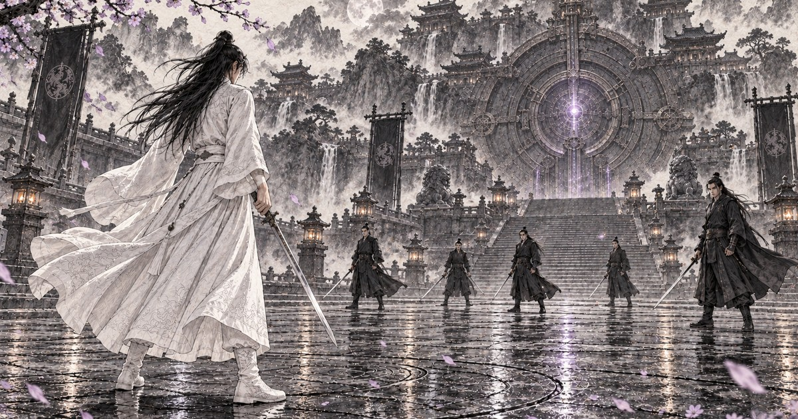

HWASAN INSU · IMAGE CINEMA · WEBTOON
화산인수 - 반천운겁(返天雲劫)
백운의 고요한 시선과 남은 파문 사이에서 관객이 반천운겁의 움직임을 완성한다.
원작 · 연출 판단 · 미리내맨 김준호

꽃잎이 닿기 전에
백운이 다섯 검객을 돌파합니다.반천운겁과 자하신공의 파문이 지나간 뒤에도 여운은 잔향으로 남습니다.
이 작품은 미리내맨 김준호의 무협 원작 화산인수를 이미지 시네마로 옮긴 창작입니다.
움직임을 채우는 사람
정지된 장면과 장면 사이에 여백을 둡니다.보이지 않는 칼의 궤적과 돌파의 순간은 보는 사람의 상상으로 이어집니다.
33초의 이미지 시네마에는 장면에 맞춰 AI로 제작한 배경음악과 효과음이 함께 흐릅니다.아홉 컷의 웹툰은 독자가 머무르는 속도로 읽습니다.
미디어는 메시지의 몸이다
맥루언의 쿨미디어 관점에서 출발한 이미지 시네마 실험입니다.음악이 시간을 이끌고 그림의 여백이 관객의 참여를 부릅니다.
창작자가 말한 “여운이 잔향으로 남아”라는 감각을 영상과 웹툰의 서로 다른 시간으로 만납니다.